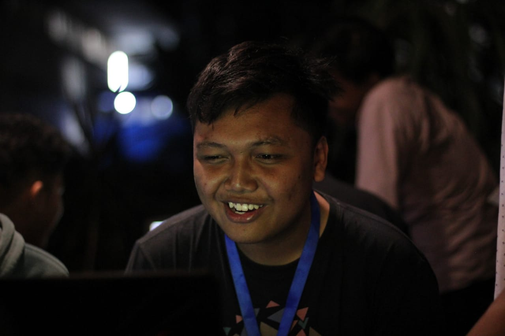

Hello World!!!
I'm Iwang
a future web Developer.

Perkenalkan, Nama lengkap saya Iwang Aryasatya Pratama biasa dipanggil Iwang.
Saya berumur 19 tahun, untuk sekarang saya adalah seorang Mahasiswa dari salah satu Universitas ternama yaitu Universitas Brawijaya
Saya memasuki Sekolah Dasar pada tahun 2006 di SDN Ditotrunan 1 Lumajang hingga tahun 2012, setelah itu saya melanjutkan ke SMPN 1 Lumajang hingga tahun 2015. Setelah memasuki SMP saya dan keluarga saya pindah ke Probolinggo dan saya melanjutkan studi saya ke SMAK Mater Dei Probolinggo hingga tahun 2018. Dan akhirnya saya masuk ke Universitas Brawijaya pada tahun 2019
Saya mengikuti Organisasi sejak saya berada di SMA, saya mengikuti 2 organisasi inti dari SMA saya yaitu OSIS dan Dewan Ambalan Pramuka. Di OSIS saya menjabat sebagai Sie. Bela Negara selama 2 tahun, sedangkan di Dewan Ambalan Pramuka saya menjabat sebagai Ketua Dewan. Di Universitas Brawijaya saya ikut dalam kepengurusan Himpunan Informatika atau biasa disebut EMIF dan menjabat sebagai Staff PSDM
Saya sudah mulai menguasai Basic HTML maupun CSS, saya juga dapat mengimplementasikan suatu ide program menjadi sebuah kode program dengan desain yang sudah cukup mumpuni di platform javascript.